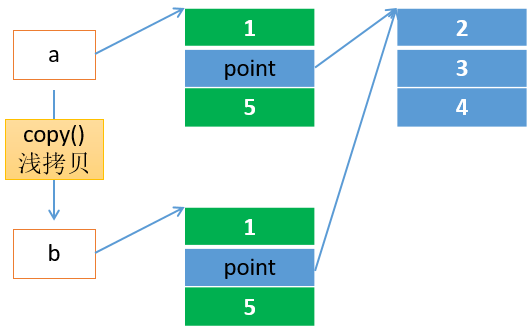
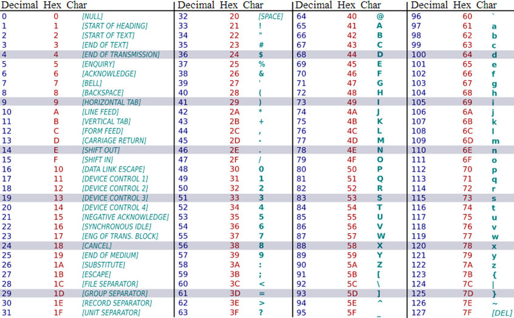

线性数据结构
1. 内建常用数据类型
分类
- 数值型
- int、float、complex、bool
- 序列sequence
- 字符串str、字节序列bytes、bytearray
- 列表list、元组tuple
- 键值对
- 集合set、字典dict
2. 数值型
- int、float、complex、bool都是class，1、5.0、2+3j都是对象即实例
- int：python3的int就是长整型，且没有大小限制，受限于内存区域的大小
- float：由整数部分和小数部分组成。支持十进制和科学计数法表示。C的双精度型实现
- complex：有实数和虚数部分组成，实数和虚数部分都是浮点数，3+4.2J
- bool：int的子类，仅有2个实例True、False对应1和0，可以和整数直接运算
2.1 类型转换
- int、float、complex、bool也可以当做内建函数对数据进行类型转换
- int(x) 返回一个整数
- float(x) 返回一个浮点数
- complex(x)、complex(x,y) 返回一个复数
- bool(x) 返回布尔值，前面讲过False等价的对象
2.2 取整
math模块的floor()、ceil()函数；内建函数int()、round()；运算符//
1 | # 整除 |
- round()，四舍六入五取偶
- math.floor()向下取整
- math.ceil()向上取整
- int() 取整数部分
- // 整除且向下取整
2.3 常用数值处理函数
- min()、max()
- abs()
- pow(x, y) 等于 x ** y
- math.sqrt() 等于 x ** 0.5
- 进制函数，返回值是字符串
- bin()、oct()、hex()
- math模块
- math.pi π
- math.e 自如常数
- math模块中还有对数函数、三角函数等
1 | type(123) # 返回的是类型int |
即使是强类型语言，也会有隐式类型转换。
3. 线性数据结构
线性表
- 线性表（简称表），是一种抽象的数学概念，是一组元素的序列的抽象，它由有穷个元素组成（0个或任意个）
- 顺序表：使用一大块连续的内存顺序存储表中的元素，这样实现的表称为顺序表，或称连续表
- 在顺序表中，元素的关系使用顺序表的存储顺序自然地表示
- 链接表：在存储空间中将分散存储的元素链接起来，这种实现称为链接表，简称链表
列表如同地铁站排好的队伍，有序，可以插队、离队，可以索引。
链表如同操场上手拉手的小朋友，有序但空间排列随意。或者可以想象成一串带线的珠子，随意盘放在桌上。也可以离队、插队，也可以索引。
4. 列表list
- 一个排列整齐的队伍，Python采用顺序表实现
- 列表内的个体称作元素，由若干元素组成列表
- 元素可以是任意对象（数字、字符串、对象、列表等）
- 列表内元素有顺序，可以使用索引
- 线性的数据结构
- 使用 [ ] 表示
- 列表是可变的
列表是非常重要的数据结构，对其内存结构和操作方法必须烂熟于心
4.1 初始化
- list() -> new empty list
- list(iterable) -> new list initialized from iterable’s items
- []
- 列表不能一开始就定义大小
1 | ls1 = [] |
4.2 索引
- 索引，也叫下标
- 正索引：从左至右，从0开始，为列表中每一个元素编号
- 如果列表有元素，索引范围[0, 长度-1]
- 负索引：从右至左，从-1开始
- 如果列表有元素，索引范围[-长度, -1]
- 正、负索引不可以超界，否则引发异常IndexError
- 为了理解方便，可以认为列表是从左至右排列的，左边是头部，右边是尾部，左边是下界，右边是上界
- 列表通过索引访问，list[index] ，index就是索引，使用中括号访问
使用索引定位访问元素的时间复杂度为O(1)，这是最快的方式，是列表最好的使用方式。
4.3 查询
- index(value,[start,[stop]])
- 通过值value，从指定区间查找列表内的元素是否匹配
- 匹配第一个就立即返回索引
- 匹配不到，抛出异常ValueError
- count(value)
- 返回列表中匹配value的次数
- 时间复杂度
- index和count方法都是O(n)
- 随着列表数据规模的增大，而效率下降
- 如何返回列表元素的个数？如何遍历？如何设计高效？
- len()
4.4 修改
- 索引定位元素，然后修改。注意索引不能超界
1 | ls1 = [1,2,3,4] |
4.5 增加单个元素
- append(object) -> None
- 列表尾部追加元素，返回None
- 返回None就意味着没有新的列表产生，就地修改
- 定位时间复杂度是O(1)
- insert(index, object) -> None
- 在指定的索引index处插入元素object
- 返回None就意味着没有新的列表产生，就地修改
- 定位时间复杂度是O(1)
- 索引能超上下界吗？
- 超越上界，尾部追加
- 超越下界，头部追加
4.6 增加多个元素
- extend(iteratable) -> None
- 将可迭代对象的元素追加进来，返回None
- 就地修改，本列表自身扩展
-
- -> list
- 连接操作，将两个列表连接起来，产生新的列表，原列表不变
- 本质上调用的是魔术方法__add__()方法
- -> list
-
- -> list
- 重复操作，将本列表元素重复n次，返回新的列表
- -> list
1 | ls1 = [1] * 5 |
这个重复操作看似好用，如果原理掌握不好，但非常危险
1 | x = [1] * 3 |
1 | y = [[1]] * 3 |
在Python中一切皆对象，而对象都是引用类型，可以理解为一个地址指针指向这个对象。
但是，字面常量字符串、数值等表现却不像引用类型，暂时可以称为简单类型。
而列表、元组、字典，包括以后学习的类和实例都可以认为是引用类型。
你可以认为简单类型直接存在列表中，而引入类型只是把引用地址存在了列表中。
4.7 删除
- remove(value) -> None
- 从左至右查找第一个匹配value的值，找到就移除该元素，并返回None，否则ValueError
- 就地修改
- 效率？
- pop([index]) -> item
- 不指定索引index，就从列表尾部弹出一个元素
- 指定索引index，就从索引处弹出一个元素，索引超界抛出IndexError错误
- 效率？指定索引的的时间复杂度？不指定索引呢？
- clear() -> None
- 清除列表所有元素，剩下一个空列表
4.8 反转
- reverse() -> None
- 将列表元素反转，返回None
- 就地修改
这个方法最好不用，可以倒着读取，都不要反转。
4.9 排序
- sort(key=None, reverse=False) -> None
- 对列表元素进行排序，就地修改，默认升序
- reverse为True，反转，降序
- key一个函数，指定key如何排序，lst.sort(key=function)
如果排序是必须的，那么排序。排序效率高吗？
4.9 in成员操作
1 | 'a' in ['a', 'b', 'c'] |
4.10 列表复制
1 | a = list(range(4)) |
问题：
- 最终a 和 b相等吗？a和b分别存着什么元素
- a 和 c 相等吗？为什么？ c = a 这一句有复制吗？
下面的程序a和b相等吗？
1 | a = list(range(4)) |
1 | a = [1, [2, 3, 4], 5] |
4.11 列表的内存模型和深浅拷贝

- shadow copy
- 影子拷贝，也叫浅拷贝。遇到引用类型数据，仅仅复制一个引用而已
- deep copy
- 深拷贝，往往会递归复制一定深度
一般情况下，大多数语言提供的默认复制行为都是浅拷贝。
1 | import copy |
| Python内建数据类型，内部都实现了 == ，它的意思是内容比较
5. 随机数
random模块
- randint(a, b) 返回[a, b]之间的整数
- randrange ([start,] stop [,step]) 从指定范围内，按指定基数递增的集合中获取一个随机数，基数缺省值为1。 random.randrange(1,7,2)
- choice(seq) 从非空序列的元素中随机挑选一个元素，比如random.choice(range(10))，从0到9中随机挑选一个整数。random.choice([1,3,5,7])
- 3.6开始提供choices，一次从样本中随机选择几个，可重复选择，可以指定权重
- random.shuffle(list) ->None 就地打乱列表元素
- sample(population, k) 从样本空间或总体（序列或者集合类型）中随机取出k个不同的元素，返回一个新的列表
- random.sample([‘a’, ‘b’, ‘c’, ‘d’], 2)
- random.sample([‘a’, ‘a’], 2) 会返回什么结果
- 每次从样本空间采样，在这一次中不可以重复抽取同一个元素
1 | import random |
6. 元组tuple
- 一个有序的元素组成的集合
- 使用小括号 ( ) 表示
- 元组是不可变对象
6.1 初始化
- tuple() -> empty tuple
- tuple(iterable) -> tuple initialized from iterable’s items
1 | t1 = () # 空元组 |
6.2 索引
索引和列表规则一样，不可以超界
6.3 查询
方法和列表一样，时间复杂度也一样。index、count、len等
6.4 增删改
元组元素的个数在初始化的时候已经定义好了，所以不能为元组增加元素、也不能从中删除元素、也不能修改元素的内容。
但是要注意下面这个例子
1 | t1 = ([1]) * 3 |
上例说明t2是可变的吗？不是说元组不可变吗？到底什么不可变
7. 字符串str
- 一个个字符组成的有序的序列，是字符的集合
- 使用单引号、双引号、三引号引住的字符序列
- 字符串是不可变对象，是字面常量
Python3起，字符串都是Unicode类型
7.1 初始化
1 | s1 = 'string' |
7.2 索引
字符串是序列，支持下标访问。但不可变，不可以修改元素。
1 | sql = "select * from user where name='tom'" |
7.3 连接
- +加号
- 将2个字符串连接起来
- 返回一个新的字符串
- join方法
- sep.join(iterable)
- 使用指定字符串作为分隔符，将可迭代对象中字符串使用这个分隔符拼接起来
- 可迭代对象必须是字符串
- 返回一个新的字符串
1 | x = 'ab' |
7.4 字符查找
- find(sub[, start[, end]]) -> int
- 在指定的区间[start, end)，从左至右，查找子串sub
- 找到返回正索引，没找到返回-1
- rfind(sub[, start[, end]]) -> int
- 在指定的区间[start, end)，从右至左，查找子串sub
- 找到返回正索引，没找到返回-1
1 | s = 'hehe.edu' |
这两个方法只是找字符串的方向不同，返回值一样。找到第一个满足要求的子串立即返回。特别注意返回值，找不到返回的是负数-1。
这两个方法效率高吗？要不要用？
这两个方法效率真不高，都是在字符串中遍历搜索，但是如果找子串工作必不可少，那么必须这么做，但是能少做就少做
- index(sub[, start[, end]]) -> int
- 在指定的区间[start, end)，从左至右，查找子串sub
- 找到返回正索引，没找到抛出异常ValueError
- rindex(sub[, start[, end]]) -> int
- 在指定的区间[start, end)，从左至右，查找子串sub
- 找到返回正索引，没找到抛出异常ValueError
index方法和find方法很像，不好的地方在于找不到抛异常。推荐使用find方法。
1 | s = 'hehe.edu' |
- count(sub[, start[, end]]) -> int
- 在指定的区间[start, end)，从左至右，统计子串sub出现的次数
1 | s = 'hehe.edu' |
- 时间复杂度
- find、index和count方法都是O(n)
- 随着字符串数据规模的增大，而效率下降
- len(string)
- 返回字符串的长度，即字符的个数
7.5 分割
- split(sep=None, maxsplit=-1) -> list of strings
- 从左至右
- sep 指定分割字符串，缺省的情况下空白字符串作为分隔符
- maxsplit 指定分割的次数，-1 表示遍历整个字符串
- 立即返回列表
- rsplit(sep=None, maxsplit=-1) -> list of strings
- 从右向左开始切，但是输出的字符串字符不会反
- sep 指定分割字符串，缺省的情况下空白字符串作为分隔符
- maxsplit 指定分割的次数，-1 表示遍历整个字符串
- 立即返回列表
- splitlines([keepends]) -> list of strings
- 按照行来切分字符串
- keepends 指的是是否保留行分隔符
- 行分隔符包括\n、\r\n、\r等
1 | s = ','.join('abcd') |
- partition(sep) -> (head, sep, tail)
- 从左至右，遇到分隔符就把字符串分割成两部分，返回头、分隔符、尾三部分的三元组
- 如果没有找到分隔符，就返回头、2个空元素的三元组
- sep 分割字符串，必须指定
- rpartition(sep) -> (head, sep, tail)
- 从右至左，遇到分隔符就把字符串分割成两部分，返回头、分隔符、尾三部分的三元组
- 如果没有找到分隔符，就返回2个空元素和尾的三元组
1 | s = ','.join('abcd') |
7.6 替换
- replace(old, new[, count]) -> str
- 字符串中找到匹配替换为新子串，返回新字符串
- count表示替换几次，不指定就是全部替换
1 | s = ','.join('abcd') |
7.7 移除
- strip([chars]) -> str
- 在字符串两端去除指定的字符集chars中的所有字符
- 如果chars没有指定，去除两端的空白字符
- lstrip([chars]) -> str ，从左开始
- rstrip([chars]) -> str，从右开始
1 | s = '\t\r\na b c,d\ne\n\t' |
7.8 首尾判断
- endswith(suffix[, start[, end]]) -> bool
- 在指定的区间[start, end)，字符串是否是suffix结尾
- startswith(prefix[, start[, end]]) -> bool
- 在指定的区间[start, end)，字符串是否是prefix开头
1 | s = "www.hehe.edu" |
7.9 其它函数
- upper()大写
- lower()小写
- swapcase() 交换大小写
- isalnum() -> bool 是否是字母和数字组成
- isalpha() 是否是字母
- isdecimal() 是否只包含十进制数字
- isdigit() 是否全部数字(0~9)
- isidentifier() 是不是字母和下划线开头，其他都是字母、数字、下划线
- islower() 是否都是小写
- isupper() 是否全部大写
- isspace() 是否只包含空白字符
其他格式打印函数中文几乎不用，大家自行查看帮助
7.10 格式化
简单的使用+或者join也可以拼接字符串，但是需要先转换数据到字符串后才能拼接。
7.10.1 C风格printf-style
- 占位符：使用%和格式字符，例如%s、%d
- 修饰符：在占位符中还可以插入修饰符，例如%03d
- format % values
- format是格式字符串，values是被格式的值
- 格式字符串和被格式的值之间使用%
- values只能是一个对象，可以是一个值，可以是一个元素个数和占位符数目相等的元组，也可
以是一个字典
1 | "I am %03d" % (20,) |
7.10.2 format函数
Python2.5之后，字符串类型提供了format函数，功能更加强大，鼓励使用。
“{} {xxx}”.format(*args, **kwargs) -> str
- args是可变的位置参数
- kwargs是可变关键字参数，写作a=100
- 使用花括号作为占位符
- {}表示按照顺序匹配位置参数，{n}表示取位置参数索引为n的值
- {xxx}表示在关键字参数中搜索名称一致的
{{}}表示打印花括号
1 | # 位置对应 |
8. 字节序列
Python3 引入两个新的类型bytes、bytearray。
bytes不可变字节序列；bytearray是可变字节数组
8.1 编码与解码
- 编码：str => bytes，将字符串这个字符序列使用指定字符集encode编码为一个个字节组成的序列bytes
- 解码：bytes或bytearray => str，将一个个字节按照某种指定的字符集解码为一个个字符串组成的字符串
1 | print("abc".encdoe()) # 缺省为utf-8编码 |
8.2 ASCII
ASCII（American Standard Code for Information Interchange，美国信息交换标准代码）是基于拉丁字母的一套单字节编码系统

8.3 Bytes初始化
- bytes() 空bytes
- bytes(int) 指定字节的bytes，被0填充
- bytes(iterable_of_ints) -> bytes [0,255]的int组成的可迭代对象
- bytes(string, encoding[, errors]) -> bytes 等价于string.encode()
- bytes(bytes_or_buffer) -> immutable copy of bytes_or_buffer 从一个字节序列或者buffer复制出
- 一个新的不可变的bytes对象
- 使用b前缀定义
- 只允许基本ASCII使用字符形式b’abc9’
- 使用16进制转义表示b"\x41\x61"
bytes类型和str类型类似，都是不可变类型，操作方法类似。
1 | print(b'abcd'[2]) # 返回int，指定是本字节对应的十进制数 |
8.4 bytearray初始化
- bytearray() 空bytearray
- bytearray(int) 指定字节的bytearray，被0填充
- bytearray(iterable_of_ints) -> bytearray [0,255]的int组成的可迭代对象
- bytearray(string, encoding[, errors]) -> bytearray 近似string.encode()，不过返回可变对象
- bytearray(bytes_or_buffer) 从一个字节序列或者buffer复制出一个新的可变的bytearray对象
b前缀表示的是bytes，不是bytearray类型
由于bytearray类型是可变数组，所以，类似列表。
- append(int) 尾部追加一个元素
- insert(index, int) 在指定索引位置插入元素
- extend(iterable_of_ints) 将一个可迭代的整数集合追加到当前bytearray
- pop(index=-1) 从指定索引上移除元素，默认从尾部移除
- remove(value) 找到第一个value移除，找不到抛ValueError异常
- 注意：上述方法若需要使用int类型，值在[0, 255]
- clear() 清空bytearray
- reverse() 翻转bytearray，就地修改
1 | b = bytearray() |
9. 线性结构
线性结构特征：
- 可迭代 for … in
- 有长度，通过len(x)获取，容器
- 通过整数下标可以访问元素。正索引、负索引
- 可以切片
已经学习过的线性结构：list、tuple、str、bytes、bytearray
9.1 切片
1 | sequence[start:stop] |
- 通过给定的索引区间获得线性结构的一部分数据
- start、stop、step为整数，可以是正整数、负整数、零
- start为0时，可以省略
- stop为末尾时，可以省略
- step为1时，可以省略
- 切片时，索引超过上界（右边界），就取到末尾；超过下界（左边界），取到开头
1 | x = [0, 1, 2, 3, 4, 5, 6, 7, 8, 9] |
在序列上使用切片[start:stop]，子区间索引范围[start, stop)，相当于从start开始指向stop的方向上获取数据
默认step为1，表示向右；步长为负数，表示向左
如果子区间方向和步长方向不一致，直接返回当前类型的"空对象"
如果子区间方向和步长方向一致，则从起点间隔步长取值
1 | # 使用id看地址，要注意地址回收复用问题 |
9.2 本质
1 | x = [0, 1, 2] |
上例可知，实际上切片后得到一个全新的对象。 [:] 或 [::] 相当于copy方法。